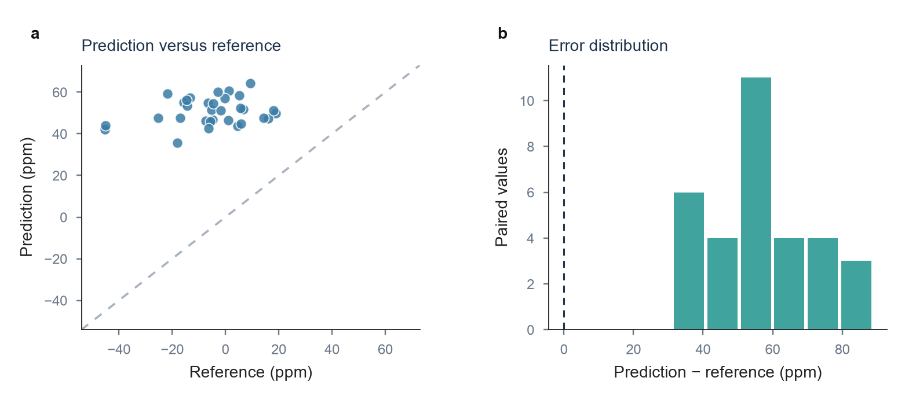

29Si chemical shift prediction
Predict the 29Si chemical shifts of a molecule from its structure. Use the atom indices to display predictions on the molecular graph or compare them with measured peaks.
What goes in
Field |
Meaning |
|---|---|
|
A valid molecular graph and a compatible 3D conformer; atom order must be preserved. |
|
29Si; the checkpoint must cover this nucleus. |
|
Optional measured ppm values for evaluation; not an inference input. |
What comes out
Field |
Meaning |
|---|---|
|
Per-atom chemical shifts in ppm, with atom indices or a peak list. |
|
Reference-matched errors and peak coverage. |
A real recorded example
Inspect the input, prediction and reference for the example below. Download the JSON for the complete numerical arrays and additional examples.

SVG · PNG · Full input/output JSON


Inspect the actual input and output fields
{
"input": {
"smiles": "CCCCCC/C(=C(/C=O)N1CCOC1=O)[Si](C)(C)c1cc(OC)cc(OC)c1",
"atom_indices": [
16
]
},
"output": {
"prediction_ppm": [
54.781612396240234
]
},
"reference": {
"ppm": [
-6.480000019073486
]
}
}
Actual evaluation results
Dataset / scope |
Model / variant |
Metric |
Value |
|---|---|---|---|
recorded evaluation |
recorded model |
mae_ppm |
56.1336 |
recorded evaluation |
recorded model |
rmse_ppm |
58.1058 |
recorded evaluation |
recorded model |
molecules |
32 |
recorded evaluation |
recorded model |
atoms |
32 |
Model and method
NMRNet encodes the molecular geometry and predicts chemical shifts at the selected atoms. The adapter prepares a conformer, loads the nucleus-specific weights and applies the checkpoint scaler.
MAE and RMSE are reported in ppm.
Reproduce
Notebook with executed figures · Quick Start
python -m openmolspec_bench run --workspace /path/to/OpenMolSpec \
--tasks nmr.forward.29Si --limit 8 --output results/nmr-forward-29Si-new.json
Call and adapt this model
from openmolspec.benchmark import Benchmark
benchmark = Benchmark(workspace='/path/to/workspace',
python='/path/to/sdk-env/bin/python',
models_root='/path/to/models',
nmr_python='/path/to/nmr-env/bin/python')
result = benchmark.run('nmr.forward.29Si', output='29Si-results.json', limit=32)
For fine-tuning, use the NMRNet author training implementation, preparing atom-labelled structures/coordinates, target masks and train/validation LMDBs for the selected nucleus. Its atom_regloss_mae and atom_regloss_mse criteria operate on supervised target atoms. Retain the scaler/reference convention and select the checkpoint on validation data. This author training route is separate from the SDK inference facade.
Model setting |
Value |
|---|---|
Checkpoint |
NMRNet All-nucleus fold 0 |
Training domain |
liquid |
Shift unit |
ppm |
Source reports and SHA-256 fingerprints
bsi_frozen_diagnostic_20261116.json — SHA-256
0f7c1f6c9eae12e644753581f785d76b1824f8311d5fccc7ae4afb98d19c65e6
References
Xu, F., Guo, W., Wang, F., Yao, L., Wang, H., Tang, F., Gao, Z., Zhang, L., E, W., Tian, Z.-Q., et al. Toward a unified benchmark and framework for deep learning-based prediction of nuclear magnetic resonance chemical shifts. Nature Computational Science 5, 292–300 (2025). doi:10.1038/s43588-025-00783-z. Source
OpenDataLab. WanJuan MolSpectra, version 1.0.3. Experimental molecular spectroscopy dataset. Source